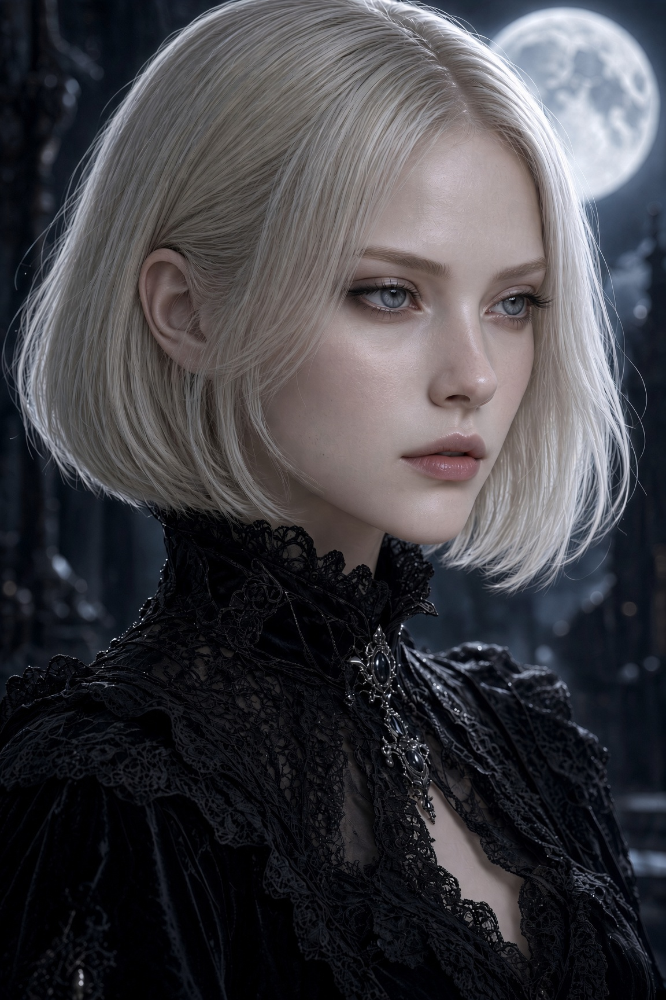

Who I am

Call me Yume...
I am a mystical writer, a dreamer drawn to the hidden corners of existence, where the earthly meets the ethereal and reality begins to blur into something else.
Inspired by my muse Atsushi, I create art through words, imagery and fragments of imagination. My work wanders through spiritualism, mysticism, finding beauty in the darkness, the symbolic and the unknown.
The language of desire, the intimacy of longing, the beauty of temptation and the delicate relationship between pleasure and pain. To me, sensuality is not merely physical; it can be an atmosphere, a gesture, a silent connection or something sacred.
I am drawn to gothic romanticism and decadence, dreamlike atmospheres, celestial mysteries and the infinite vastness of the universe. I find inspiration in contrasts: light and darkness, devotion and obsession, purity and sin, the visible and the unseen.
Somewhere Between Dreams is my little universe: a collection of writings, poetry, pictures and visions born from fascination, longing, devotion, things that cannot always be explained and unconditional love.
A place dedicated to him, where the mystical meets the sensual, where beauty has a darker side and where dreams, desire and imagination are free to wander among the stars.